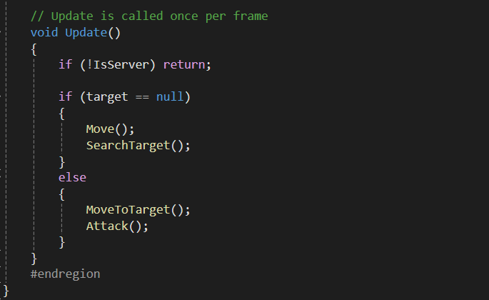
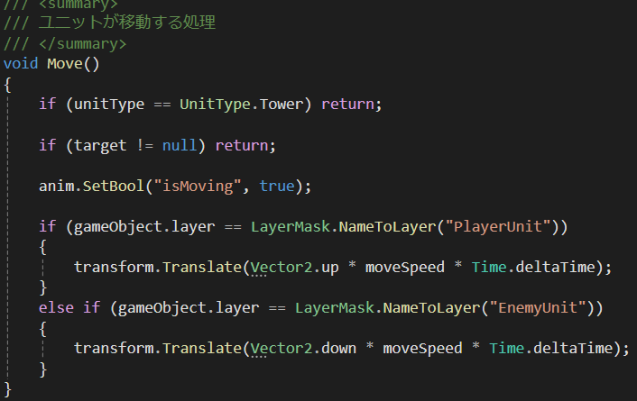
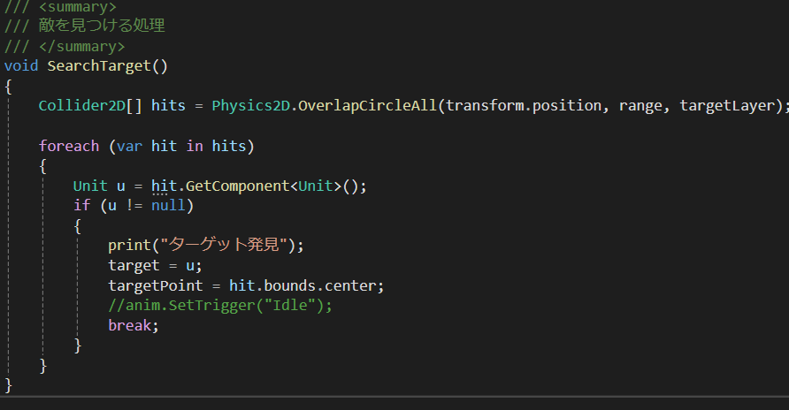
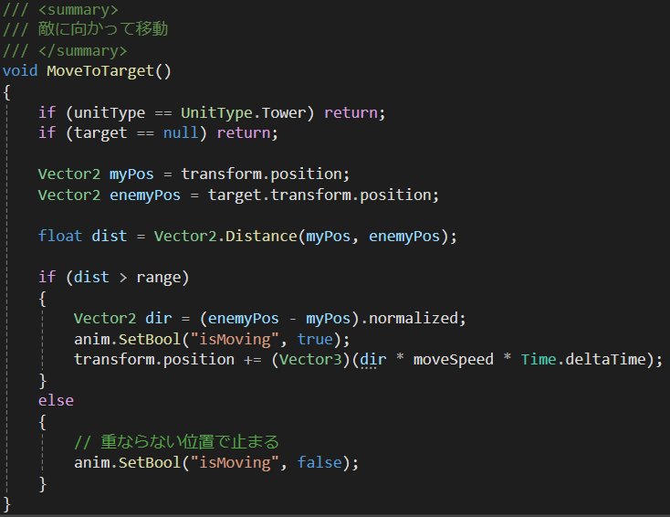
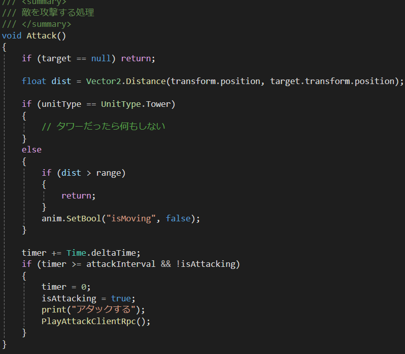
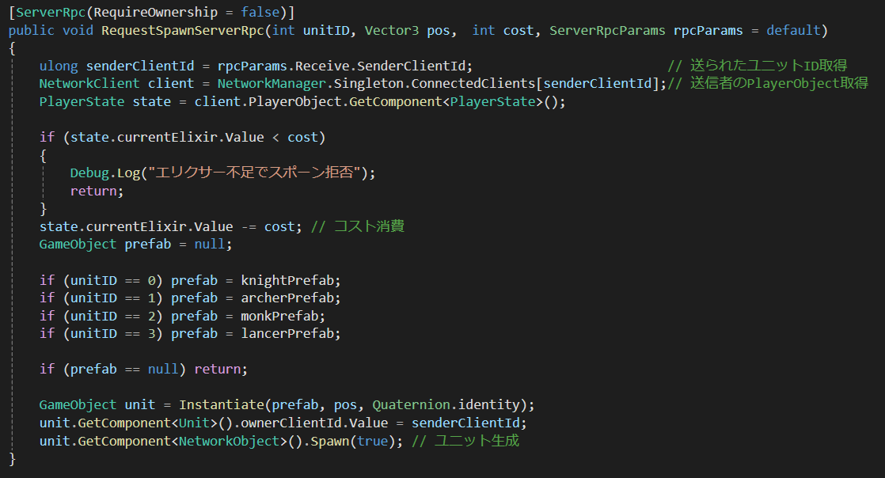

UnitのHP・攻撃力・攻撃範囲・攻撃間隔・足の速さを非プログラマーや他のプログラマーがインスペクター上で簡単に変更をできるように 制作しました。
これにより、後からキャラクターを追加する際やゲームバランスの調整をする際に変更を加えやすくなっています。
ユニットの攻撃範囲に敵が入ったら移動を停止し、攻撃処理に移行します。
この時、ユニットのアニメーションイベントを利用して実行タイミングを制御しています。
攻撃モーション終了時に関数を呼び出すことで、見た目と内部処理の同期を行い、違和感のない挙動になるように実装しました。

Updateで基本的なユニットの行動を関数で制御しています。
基本的にtargetが見つかっていないなら移動、敵を見つける処理を動作させ、targetが見つかったら攻撃処理に移行する ようになっています。

自分のレイヤーによって上に進むか下に進むか判定しています。 もし自分がタワーの場合移動しないので処理をスキップする処理を入れています。

target（攻撃対象）を探索する処理を実装しました。 foreach文を用いて敵ユニット探索し、距離判定によって攻撃可能な対象を取得しています。 また、range変数を攻撃範囲として設定することで、値を調整するだけでユニットごとに 近距離・遠距離の特性を切り替えられる設計にしました。

攻撃処理に移行した際に敵が自分を無視して移動するユニットなら攻撃範囲から外れてしまうので、 ユニットを追いかける処理を実装しています。

攻撃処理では各ユニットのattackInterval(攻撃間隔)によって攻撃させます。 PlayAttackClientRpcという関数を呼ぶことによってクライアントでもホストでも 同じように攻撃処理が発動するようにしています。

NGO（Netcode for GameObjects）を用いたユニット生成処理を実装しました。
クライアントから送信されたServerRpc内で送信元のClientIDを取得し、対応するプレイヤー情報（PlayerState）を取得しています。
生成前にエリクサー（コスト）不足の判定を行い、 問題がなければコストを消費した上で、受け取ったunitIDに応じて生成するユニットPrefabを切り替える仕組みにしています。 その後、サーバー側でユニットを生成し、NetworkObjectのSpawn処理を行うことで全クライアントに同期されるようにしています。
また、左の動画ではユニットを出すときに使えるカードが分かりやすくなるクールタイムも実装しています。エリクサーはホストとクライアントが 同期せずに分けるようにしています。